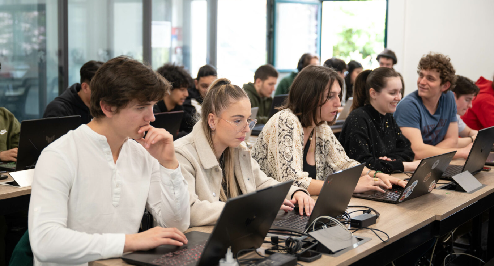
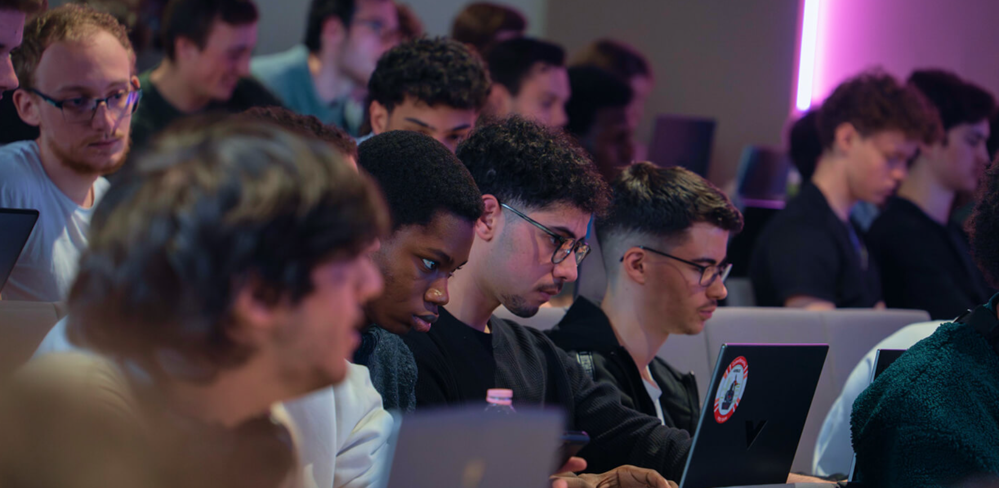
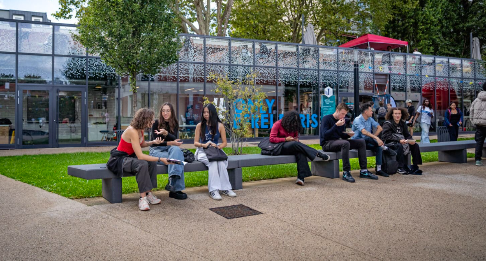
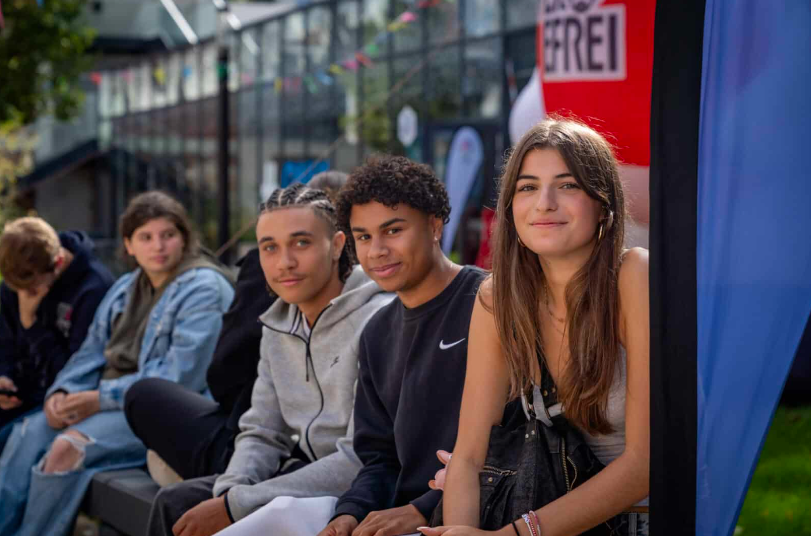
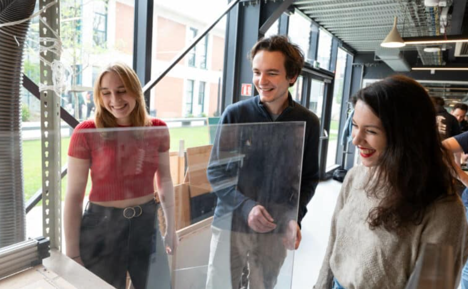
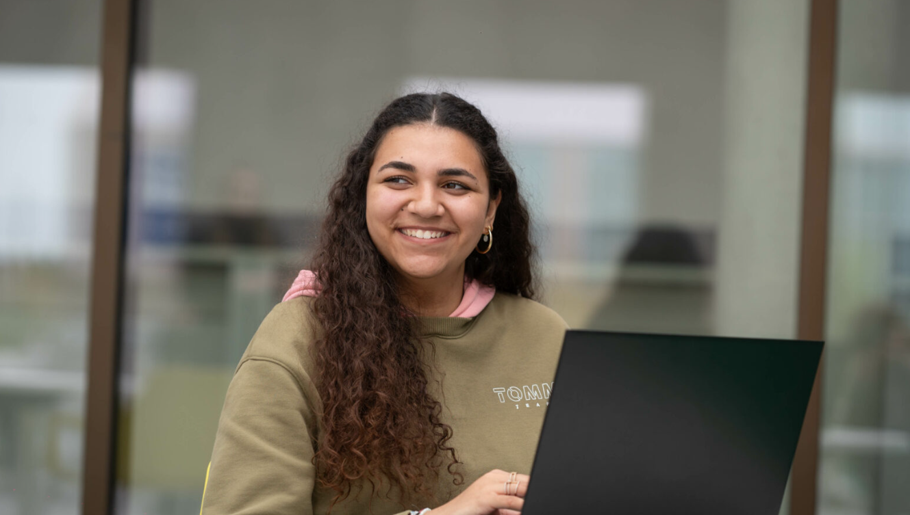
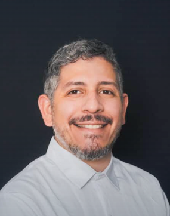
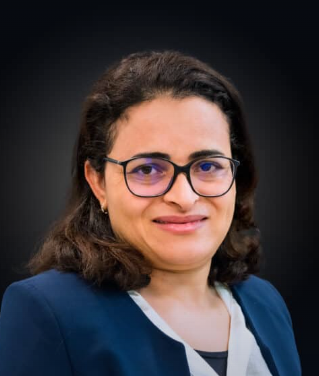

Nos Formations
À l’EFREI, nos formations préparent les ingénieurs de demain à relever les défis technologiques et sociétaux.
Alliant excellence académique, innovation et ouverture internationale, elles offrent un socle solide et évolutif.
Du numérique aux systèmes intelligents, chaque parcours est conçu pour révéler le potentiel de chacun.
Découvrez des programmes pensés pour construire votre avenir.

Nos Bachelors

Bachelor Développeur web & IA
Le Bachelor Développeur web & IA forme des développeurs capables d’évoluer dans tout type d’entreprise. Il apporte les connaissances nécessaires pour développer un site web, une application mobile ou n’importe quel logiciel et ce, de manière durable, sécurisée et évolutive.
Compétences acquises
Le développeur full stack gère tous les aspects du développement d’applications web, des interfaces utilisateur (front-end) à la logique serveur (back-end). Ce professionnel a pour mission de concevoir, coder, tester, et maintenir des solutions web intégrales.
Prérequis
Être titulaire d’un baccalauréat toutes filières confondues, ou niveau équivalent.
Pour une admission en troisième année (soit le B3) : être titulaire d’une certification de niveau 5 dans le domaine informatique.
Débouchés
Développeur Full Stack
Concepteur-développeur Web/applications mobiles
Analyste programmeur
DevOps
Lead Developer

Bachelor Cybersecurité & réseaux - grade licence
Le Bachelor Cybersécurité & Réseaux délivre un diplôme de grade de licence et apporte un solide socle scientifique autour de la sécurité informatique et de ses applications techniques multiformes.
Compétences acquises
Les élèves, à l’issue du processus de certification, seront capables d’assurer la sécurité des services numériques à destination des utilisateurs en respectant les normes et standards reconnus par la profession et en suivant l’état et l’art de la sécurité informatique à toutes les étapes.
Prérequis
Être titulaire du Baccalauréat ou un diplôme étranger de fin d’études secondaires reconnu comme équivalent
par le Ministère Français de l’Éducation Nationale.
Une spécialisation parmi les mathématiques, les sciences physiques ou l’informatique est indispensable.
Débouchés
Analyste sécurité systèmes et réseaux
Assistant-ingénieur sécurité des systèmes d’information
Administrateur des systèmes d’information
Analyste SOC
Bachelor Cybersécurité & ethical hacking
Le Bachelor Cybersécurité & Ethical Hacking forme des professionnels aptes à renforcer la protection des organisations face à l’évolution constante des menaces cybercriminelles.
Compétences acquises
L’Administrateur Systèmes, Réseaux et Cybersécurité est un professionnel IT essentiel qui assure le bon fonctionnement, la sécurité et l’efficacité des infrastructures technologiques au sein des organisations. Il gère et maintient les systèmes d’exploitation en s’assurant de leur mise à jour, leur sécurité et leur optimisation.
Prérequis
Cursus en 3 ans : être titulaire d’un baccalauréat
Cursus en 1 an : être titulaire d’une certification de niveau 5 dans le domaine informatique
Débouchés
Administrateur systèmes et réseaux et sécurité
Administrateur infrastructures
Administrateur d’infrastructures et cloud
Administrateur cybersécurité
Responsable infrastructure systèmes et réseaux
Bachelor informatique - grade licence
Le Bachelor Informatique, diplôme de grade licence, est construit sur un solide socle scientifique qui permet aux étudiants de maîtriser les technologies de pointe en programmation et de développer des applications performantes.
Compétences acquises
Le professionnel de la certification Sciences et Ingénierie spécialité Informatique est impliqué dans la conception des produits en respectant les normes et standards ainsi que la demande des clients. La connaissance du métier du client, du cahier des charges fonctionnel pour lequel il réalise l’application lui est demandée.
Prérequis
Être titulaire du Baccalauréat ou un diplôme étranger de fin d’études secondaires reconnu
comme équivalent par le Ministère Français de l’Éducation Nationale.
Une spécialisation parmi les mathématiques, les sciences physiques ou l’informatique est indispensable.
Débouchés
Développeur d’applications
Développeur web
Développeur backend
Développeur frontend
Développeur d’applications mobiles, développeur web mobile
Il existe deux parcours possibles pour chacun de ces bachelors :
le parcours campus, qui se déroule entièrement sur le campus de l'EFREI,
et le parcours alternance, qui combine des périodes de formation en entreprise et des périodes de cours sur le campus.
Programme Grandes Ecoles
Les deux premières années du programme correspondent à la préparation intégrée, marquée par un cursus identique pour tous. La troisième année ne correspond pas encore à la spécialisation, mais les étudiants passent un semestre à l'étranger. La spécialisation intervient à partir de la quatrième année parmi les options suivantes :

Filière Data Science
La filière Data Science forme des ingénieurs capables d’analyser, structurer et valoriser les données pour répondre aux grands enjeux sociétaux et économiques. Une formation au croisement des mathématiques, de l’informatique et de la stratégie, pour faire de la donnée un moteur de transformation.
Statistiques
100% d'insertion après six mois
77% de taux de certification
2082 inscrits en 2025-2026
Spécialisations
Data & Artificial Intelligence
Data Engineering
Bio & Numérique
Business Intelligence & Analytics
Débouchés
Data Scientist
Big Data Architect
Ingénieur en génomique
Consultant/ ingénieur en BI/BA
DevOps Engineer

Filière Information Technology
La filière Information Technology forme des ingénieurs capables de concevoir, déployer et gouverner des solutions numériques complexes au service des organisations. Une formation au croisement de la stratégie, du développement logiciel et des technologies émergentes, pour accompagner la transformation digitale des entreprises et relever les défis de secteurs en constante évolution.
Statistiques
100% d'insertion après six mois
77% de taux de certification
2082 inscrits en 2025-2026
Spécialisations
Information Systems Strategy & Governance
Software Engineering
IT for Finance
Technologies immersives et IA
Débouchés
Ingénieur R&D
Développeur Full-stack
Consultant en systèmes d’information
Manager risques / conformité des gestionnaires d’actifs
Ingénieur en vision par ordinateur et IA

Filière Sécurité & Réseaux
La filière Sécurité & Réseaux forme des ingénieurs capables de concevoir, administrer et sécuriser les infrastructures numériques qui soutiennent l’économie et la société. Une formation d’excellence pour répondre aux défis croissants de la cybersécurité et des systèmes connectés.
Statistiques
100% d'insertion après six mois
77% de taux de certification
2082 inscrits en 2025-2026
Spécialisations
Cybersécurité, SI & Gouvernance
Cybersécurité, infrastructures et logiciels
Cybersécurité et cloud
Débouchés
Expert en Sécurité des SI
Architecte en cybersécurité
Expert en test d’intrusion
Ingénieur conseil en cybersécurité
Architecte de sécurité Cloud
Filière Systèmes Embarqués
Au croisement de l’électronique, de l’IA et de l’autonomie des systèmes, la filière Systèmes embarqués forme des ingénieurs capables de concevoir et d’intégrer des technologies au sein d’environnements complexes.
Statistiques
100% d'insertion après six mois
77% de taux de certification
2082 inscrits en 2025-2026
Spécialisations
Transports intelligents
Systèmes robotiques et drones
Débouchés
Ingénieur en Conception des Systèmes Embarqués
Ingénieur en ADAS et Système Autonomes
Ingénieur en Intelligence Artificielle Embarquée
Ingénieur robotique
Ingénieur conception et simulation électronique

Alternance
Les majeures en apprentissage de l’Efrei forment des ingénieurs capables de mettre la technologie au service de la performance des organisations. En associant expertise technique et expérience professionnelle, ces formations préparent les étudiants à relever les défis du numérique : développement logiciel, intelligence artificielle, data science, réseaux et cybersécurité. Grâce à l’alternance, ils acquièrent une solide maturité professionnelle et deviennent des acteurs clés de la transformation digitale des entreprises.
Statistiques
100% d'insertion après six mois
77% de taux de certification
2082 inscrits en 2025-2026
Spécialisations
Logiciels et Systèmes d’information
Big Data & Machine Learning
Réseaux et sécurité
Comment rejoindre ?
Possibilité de commencer l'alternance dès la troisième année de n'importe quel parcours.
Pour le cycle ingénieur, l'alternance est aussi possible lors de la cinquième année.
Les Projets

Etudes du Microbiote soumis
à l'impesanteur

Ruches connectées

Alarmes personnelles
Voiture autonome
Opportunités de Stage
Stage ouvrier - 4 semaines
En première année de cycle ingénieur, les étudiants effectuent un stage ouvrier. Ce stage a pour objectif de leur apprendre à travailler en équipe, à respecter les consignes de sécurité et à comprendre les processus de production. C'est une expérience importante afin de se rendre compte des réalités du monde ouvrier dans lequel un ingénieur peut un jour être amené à avoir un impact.
Stage commercial - 4 semaines
Le stage commercial se déroule durant la deuxième année de cycle ingénieur. Ce stage permet aux étudiants de découvrir les métiers du commerce et de la vente, et de développer leurs compétences en communication et en négociation. Cette expérience développe aussi la capacité de l'élève à s'exprimer de manière claire avec un client, capacité essentielle d'un inégnieur.
Stage d'ingénieur - 12 semaines
Ce stage s'effectue en quatrième année de cycle ingénieur. Il permet aux étudiants de mettre pour la première fois en pratique les compétences acquises dans leur domaine de spécialisation choisi, et de se préparer à leur future carrière d'ingénieur. C'est un premier pas dans le monde de l'entreprise, qui permet de poser des bases solides pour la suite.
Stage de fin de cursus - 24 semaines
Ce stage s'effectue lors de la dernière année de cycle ingénieur. C'est la dernière étape avant l'obtention du diplôme d'ingénieur, et permet à l'élève de se construire une expérience professionnelle solide qui lui permettra une meilleure entrée sur le marché du travail.
Nous contacter : Formulaire de contact
Notre Equipe Pédagogique

Asma GABIS
Enseignante-chercheuse en informatique et responsable du département informatique à l'EFREI. Elle a contribué à de nombreux articles et chapitres, dont un article sur la théorie, les variants et l'application du "Grasshopper Optimization Algorithm".
Max AGUEH
Responsable du pôle "Sécurité, Réseaux, Systèmes Embarqués". Il a écrit de nombreux papier de conférence durant les dix dernières années, en particulier sur les sujets de transports publics intelligents.


Marciel BARROS PEREIRA
Doctorant de l'axe de recherche "Réseaux de communication". Il a publié de nombreux travaux, dont certains en collaboration avec d'autres chercheurs de l'Efrei, sur des sujets tel que les réseaux dans le domane médical et les hopitaux.
Malika CHARRAD
Enseignate-chercheuse de l'axe de recherche "Données et Intelligence Artificielle". Elle a écrit de nombreux papiers, dont une partie sur l'optimisation du partionnement de données lors de l'analyse de données massives.

Et Après ?
Ces entreprises recrutent !